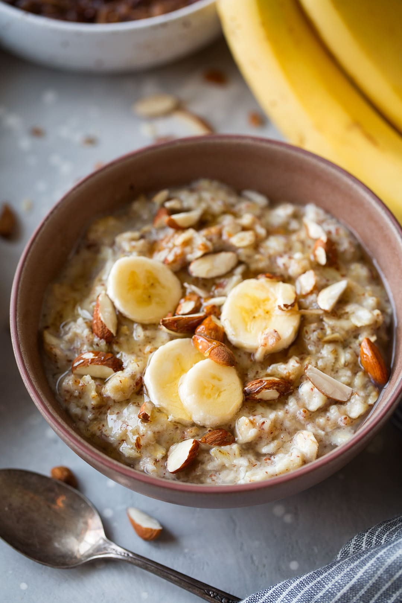

\
Morning Oatmeal
The perfect breakfast for everyday, inlcuding a mix of seeds, spices, fruit, and sweetness!
Ingredients
- Instant Oats
- Almond Milk (or any alternative)
- Salt
- Cinnamon
- Turmeric
- Cardamom
- Blueberries
- Sunflower Seeds or pumpkin seeds
- Maple Syrup
- Chia Seeds
Steps:
- Add 1 cup of oats to a bowl, followed by almond milk to cover completely
- Mix 1 teaspoon each of cinnamon, turmeric, and cardamom.
- Mix 1/2 teaspoon of salt into wet oats and spices
- Incorperate one handful of blueberries into mixture
- Add 2 tablespoons each of chia seeds and sunflower/pumpkin seeds
- Drizzle 1 to 2 tablespoons of maple syrup on top
- Place bowl in microwave on high for 2 to 2 1/2 minutes, depending on microwave strength
- Mix and enjoy!